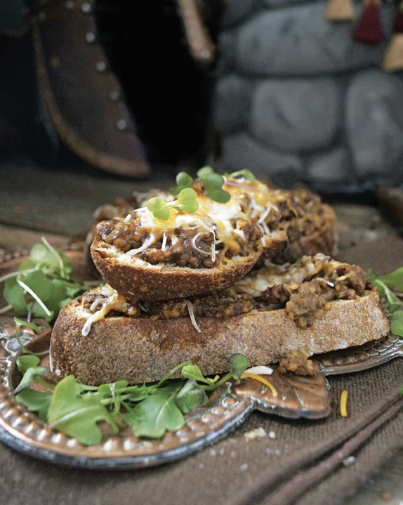

IRONFORGE RATIONS

This dwarven recipe contains a beautiful pairing of haggis and beer, which has been the lunch of champions for over a thousand years. Simple, entirely satisfying, and perfect for when you need a quick meal on indefinite guard duty.
INGREDIENTS
- 2 tablespoons butter
- 2 to 3 shallots, thinly sliced
- pinch of salt
- 15 oz of haggis
- 1 tablespoon flour
- 12 oz beer
- 4 to 6 slices of rustic bread, toasted
- 1 cup cheddar cheese
STEPS
- Melt the butter in a frying pan over medium heat. Add the shallots and cook until they are soft and translucent. Add the salt and the haggis, breaking it up and spreading it around the pan until it is heated through. Work in the flour until it has been absorbed, then chase with about a third of the beer. The mixture should start foaming into a thick gravy. Depending on your preferences, you can add a bit more beer.
- Divide the haggis evenly between your slices of bread, top with cheddar cheese, and place under the broiler until it is melted. Top with a pinch of salt and pepper to garnish.